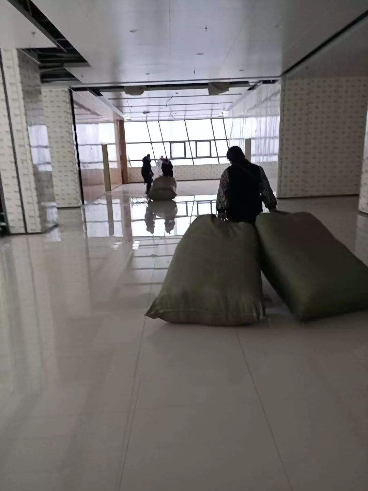
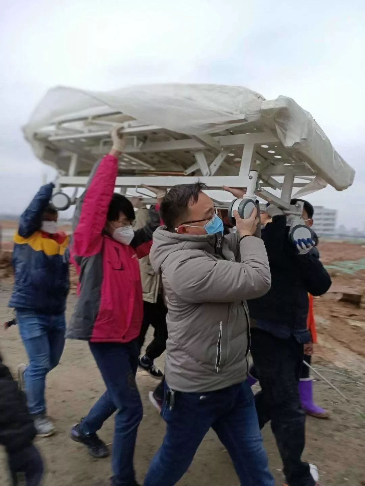

特别报道 | 湖北省长鞠躬，黄冈卫健委主任免职，政府表态打几分？
原文链接 备份链接 作者 | 第一财经 一财资讯 来源 | 新华社 人民日报 央视新闻 中国新闻网 据人民日报，29日晚，湖北省召开第8场新型冠状病毒感染的肺炎疫情防控工作新闻发布会。湖北省委副书记、省长、省新型肺炎防控指挥部指挥长王晓 …
***** *****
*****
*****1月28日晚10点半，首批患者入住大别山区域医疗中心。**********叶宝在家里看着患者入住的视频，哭了，“终于可以安心吃一顿饭了。**********”*****

大别山区域医疗中心。受访者供图
文 | 新京报记者 韩沁珂
编辑｜王婧祎 校对 | 危卓
►本文约2623字，阅读全文约需5分钟
1月26日凌晨，黄冈“90后”志愿者叶宝在朋友圈发了个群二维码，帮助黄冈市中心医院新院区改造工程召集志愿者。“不知道能号召多少人”，怀着忐忑，她睡着了。
黄冈距离武汉市中心仅1个多小时车程，人口不到800万，是此次新型肺炎疫情最严重的区域之一。截至2020年1月30日24时，黄冈市累计报告新型冠状病毒感染的肺炎病例573例，死亡12例，治愈6例，确诊和死亡人数仅次于武汉。
为更有效地收治、隔离病患，1月25日，湖北黄冈市委、市政府决定启用大别山区域医疗中心作为发热患者集中收治点，要求2天内将其改造成黄冈版“小汤山”，容纳1000张病床。
按照计划，这里本该在4个月后作为黄冈市中心医院新院区投入使用，新院区主体工程、室内外装饰装修均已完成。现在，相关部门、医院和志愿者们需要在48小时内突击完成装修收尾、硬化亮化、清洁楼层、布置病房等工作。
志愿者快速集结
********* *********
*********
1月26日，黄冈小雨转雨夹雪，气温5℃~3℃。
早上8点，叶宝醒来时，义工群成员人数已经超过200。到了9点多，20多个行动迅速的志愿者已经聚在了黄冈版“小汤山”——大别山区域医疗中心门口。
志愿者们负责的工作主要包括，大别山区域医疗中心1栋3-7层隔离区医疗设备的搬运、病房初步布置和1-3栋的楼层清洁。
“装棉被的包裹特别重，女孩子很难搬动，从车上卸下来只能一路拖进楼。”叶宝看到，在电梯门外，堆着十几个半人多高的棉被包，三位身材并不高大的女士喘着粗气，合力将包裹抬进电梯。

志愿者正在将半人高的包裹拖到指定地点。受访者供图
中午11点，叶宝在朋友圈发布，“我们新医院需要人下货”。很快，更多的志愿者加入进来，下午，到场的志愿者已经超过100人。
由于疫情严重，加之大别山区域医疗中心地处偏远，医院方面无法在短期内找到足够的工人，只得部分依靠志愿者。一位医院工作人员向新京报记者感慨，“我们按1天600元的价格雇人，有很多人不愿意来，但志愿者们在医院从早干到晚，什么都不要。”
49岁的大车司机杨光（化名）也是志愿者之一。他所在的志愿者3群有209人——这样的微信群有6个，每个群有200-400人不等。1月26日这天，杨光吃过午饭，驱车十几公里来到大别山区域医疗中心，想为对抗疫情做点什么，“能干多少就干多少”。
随着现场志愿者人数的增加，叶宝自动成为了“指令播报员”。黄冈市中心医院负责采购的程敏（化名）将货车到达时间、搬运所需人数和物资需要放置的地点告诉叶宝，叶宝再将信息转发至志愿者群。医院工作人员负责清点，志愿者们则负责卸货并搬运到指定地点。
工作一直持续到第二天凌晨2点多，大家终于将最后一车抵达医院的病床搬完。刚装修完的大别山医疗中心内几乎没有家具，医院工作人员和志愿者只能蹲坐在地上休息。
这一天，57岁的程敏走了6万多步，叶宝则喊到声音嘶哑。
1月26日晚11点半，叶宝在朋友圈发布了第二天的任务：安装1000张床、2000个垃圾桶以及医院所有的卫生。她不忘提醒大家注意自己的身体状况，戴好口罩。
“好像这些东西不要钱一样”
**********************
1月27日，黄冈阴转多云，气温5℃~0℃。
“从来没见过那么多垃圾桶。”叶宝感叹。在她拍摄的视频中，安装好的垃圾桶铺满了半个大厅，“每张床边都要有垃圾桶。”
女士们在室内安装垃圾桶的同时，男士们源源不断地搬运着病床。每张病床都需要10个人才能从卡车上搬下来，再由6个人抬进病房。在接近0℃的气温里，搬运病床的志愿者们不到两小时要换一次口罩，汗水和哈气会将口罩彻底浸湿。
为了提高工作效率，医院工作人员将所有志愿者以10人为一组，编成了30多个组，每个组都有一位联系人，叶宝负责协助程敏将任务传达给各组联系人。
中午11点，1000张病床配套的柜子陆续送到。十几个小组一字排开，在卡车和电梯间连起一条传送带，小柜子在志愿者们手中快速移动着，“每层需要100个。”按照医院工作人员的要求，2个小时内，所有柜子就已经放置在指定区域。
程敏表示，一张病床的工作量包括病床的安装，床上用品、床边柜子和垃圾桶的摆放，病床周边区域的清洁，1个人做完这些工作需要几个小时，“志愿者们在1天的时间就完成了1000张病床的工作量，很辛苦。”

刚下过雨，地面泥泞，志愿者将病床抬起来运进楼里。受访者供图
“有没有爱心人士送几件可乐？”叶宝在朋友圈里发到。1个小时后，一位戴着三层口罩的市民开车送来了不同容量的几十瓶可乐。这让叶宝又一次感到黄冈市民的团结。
在大别山区域医疗中心改造工程的第二天，医院大厅的角落里已经堆满了成箱的矿泉水、泡面和小零食。
“我在朋友圈说我们需要马桶刷、钢丝球，不用一会儿，几百件就送到医院门口了，都不知道是谁送来的。”叶宝说，“有的小卖部直接把自己的库存都送来了，就好像这些东西不要钱一样。”
一呼即来的除了清洁工具，还有技术人员。叶宝在抖音和朋友圈发出了寻找疏通管道技术工的求助视频后不久，几位技工就带着工具赶过来了。
“终于可以安心吃一顿饭了”
**********************
1月28日，黄冈阴转多云，气温5℃~0℃。
早上八点半，几位志愿者拿着红外测温仪帮每一个到场的人测量体温。
“武汉返乡的不要来，家中有人发热的不要来，身体不适的不要来”，这是叶宝在召集志愿者时提出的要求。在改造工程现场，叶宝戴着医院和爱心人士提供的口罩，提醒志愿者们及时更换口罩，并定时为大家测量体温。
程敏告诉新京报记者，大别山区域医疗中心本身尚未有病人入住，不存在传染源。为了保证志愿者的安全，医院准备了红外测温仪，志愿者进入和离开时都需要测量体温，此外，医院也设置了专门的房间安置消毒机，志愿者们在离开前可以将外衣放在房间里进行消毒，或者喷酒精消毒。
在医护人员努力帮助志愿者规避感染风险的同时，黄冈市的爱心餐厅则想尽办法让志愿者和医生们能吃得好一点。熊涛（化名）和他的朋友一直在提供免费送餐服务，“本来打算初三开业，囤了一些食材，现在这样也开不了业，我们就想着免费把这些东西做给医护人员和志愿者们吃，每天保证不重样。”熊涛说。

志愿者蹲在地上吃盒饭。受访者供图
从1月25日开始，熊涛的爱心订餐每天都会接到1500份左右的订单，最多的时候一天可以送1700份餐食。他每天早上8点开始接单，确定送餐数量和地点，联系有车的志愿者出车送餐，晚上11点多才能回家。“这几天每天就睡4个小时，但是到现场一看就觉得自己做得还不够。”
“1月28日的时候我们的食材快用完了，另一家餐厅的老板就把他囤的食材送过来救急了。”熊涛感慨，“我们本来是竞争对手的。”
这天中午，志愿者的工作正式结束，撤出大别山医疗中心。500余位医护人员还要抓紧时间完成病房隔离设施的安装、医疗设备调试等专业工作。
1月28日晚10点半，首批患者入住大别山区域医疗中心。叶宝在家里看着患者入住的视频，哭了，“终于可以安心吃一顿饭了。”
*洋葱话题*
*▼*
*你想为湖北**做些什么？*
*后台回复关键词*****“洋葱君” ，加入读者群****
***推荐阅读***

**雷神山值班人员：不知道给多少工钱，不给钱就当是志愿者了
**


卫健委专家曾光：关闭离汉通道为专家组意见，绝对正确

*********既然在看，就点一下吧****** *********
*********
原文链接 备份链接 作者 | 第一财经 一财资讯 来源 | 新华社 人民日报 央视新闻 中国新闻网 据人民日报，29日晚，湖北省召开第8场新型冠状病毒感染的肺炎疫情防控工作新闻发布会。湖北省委副书记、省长、省新型肺炎防控指挥部指挥长王晓 …
原文链接 备份链接 他觉得自己像一个巨大的电插座，身上插满了孔，求助信息和资源提供信息被一起插到他身上，他再来牵线对接。 文 | 谢婵 李叙瑾 编辑 | 小豆 22岁的梅浩宇窝在出租屋里，吃光了13包泡面和3大袋零食，每天睁开眼睛，他就开 …
原文链接 备份链接 这名医生担心疫情在黄冈下面的县市地区进一步扩散。「现在所有人都把目光放在武汉，少有人注意到周边地区。这些地区的医疗物资本来就不足，要是没人关注的话，就会变成第二个武汉。」 文｜****苏东 编辑｜**** …
原文链接 备份链接 我是下面这篇文章的作者，凤凰网美食频道的编辑，1月26日，频道的工作群除了大家拜年信息之外，一位同事转发来的图片让我深受感动。这位同事是武汉人，她和众多无法与家人团聚的武汉人一样担心着自己的家乡，担心自己的亲人。 所以 …
原文链接 备份链接 “追踪一个人捐赠的物资是真的是没有时间去做的，因为每天捐赠的人太多了” \ 思思，武汉红十字会临时志愿者，话务组 \ 中国红十字会截至 1 月 25 日，累计接受爱心捐赠达 3.4 亿元，接受捐 …